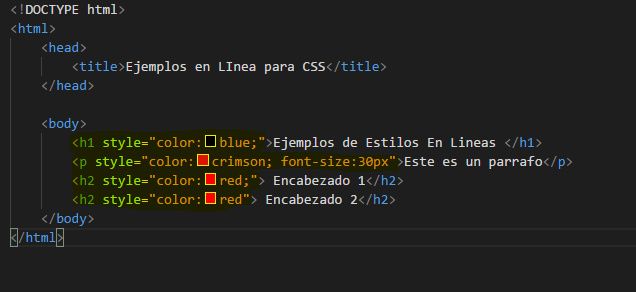
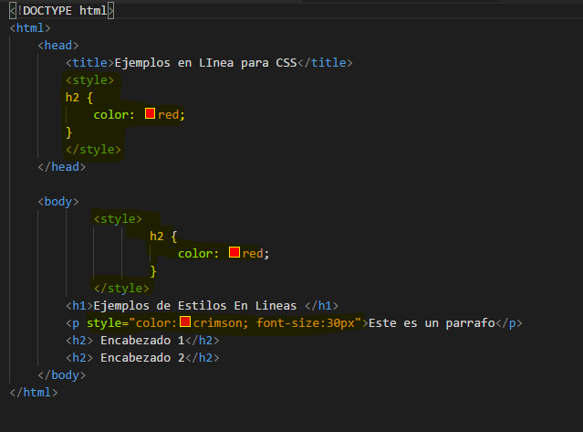
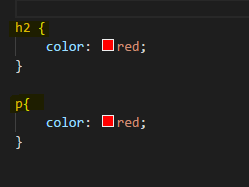

Las hojas de estilo representan un avance importante para los diseñadores de páginas web,
al darles un mayor rango de posibilidades para mejorar la apariencia de sus páginas.
En los entornos científicos en que la Web fue concebida, la gente estaba más preocupada
por el contenido de sus páginas que por su presentación. A medida que la Web era
descubierta por un espectro mayor de personas de distintas procedencias, las
limitaciones del HTML se convirtieron en fuente de continua frustración, y los autores
se vieron forzados a superar las limitaciones estilísticas del HTML.
Tipos
- Por default (Aplicados por el navegador )
- Definidos por el usruario ( User Styles )
- Hojas de estilo Externas ( Archivos independientes de HTML)
- Estilo Interno (Etiqueta style de HTML)
- Estilo en linea (Atributos style de HTML )
Estilo En Linea/h2>
Estos estilos se aplican dentro de las etiquetas van directo y se podria decir que el principal
aunque es muy poco eficiente.

Estilo Interno
Este estilo se implementa dentro del HTML pero de una forma menos directa
ya que no va dentro de la etiqueta, y el estilo se define de la siguiente manera en el head.

Estilos externos
Este estilo se implementa en otra o externa o ajena al html en este caso seria el css
es la forma mas eficiente para los estilos ya que te permite utilizar la cascada, is clases, para
poder implementarla hay que utilizar la etiqueta de link a de la siguiente manera.

